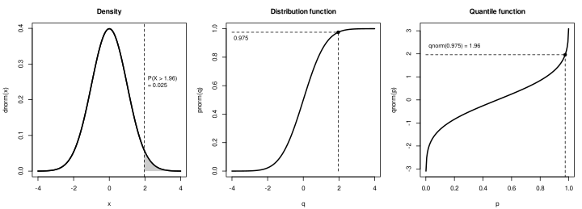

Distributions and Random Numbers
|
This content was generated with the assistance of AI and should be verified against the official documentation before being relied on in production. |
Checked against R 4.6.1 (2026-06-24) on 2026-10-20; R 4.6.2 is scheduled for 2026-10-29. Everything on this page is base R (the stats, base, graphics, grDevices and parallel packages that ship with R) except one add-on package: withr 3.0.3, used in one short example and labelled where it appears; the lintr 3.4.0 default linters were used only to check the scripts. R is, among other things, a set of statistical tables and a simulator, and both come from one naming scheme: every standard distribution has a density (or mass) function, a cumulative distribution function, a quantile function and a random-number generator, spelled with the four prefixes d, p, q and r in front of the name of the family. This page explains that scheme and the arguments every member of it shares, how the tails of a distribution are computed and why they need care, how R produces pseudo-random numbers (the state in .Random.seed, set.seed(), RNGkind() and RNGversion()), how sample() works and the change that R 3.6.0 made to it, how to get reproducible and parallel-safe streams, and how to turn all of it into simulations with replicate(): a Monte Carlo estimate, a bootstrap, a permutation test and counts of loans per week.
Every example is a script that was run with Rscript on R 4.6.1 with warnings printed as they happen (options(warn = 1)), and the lines that start with #> are what it printed. The scripts also pass the default lintr linters. The names books, loans, shelf_today, loan_days and the book() constructor come from the running library-shelf scenario described on the section index: a script that needs them starts with source("scenario.R"). Here the shelf is seen from the analysis side: the 51 returned loans with a sensible duration give a sample of loan durations in days, the loan_date column gives loans per week, and books$pages is a small sample to bootstrap. Because the output of a random number is only reproducible when the seed is set, every script that prints a random result calls set.seed() first, and the scripts that change the generators put them back before they end. Where a message contains quotation marks, they are the typographic quotes R prints in a UTF-8 locale. The page does not draw the plots of the sampling distributions it computes except one: the three-panel figure of the normal distribution below was produced by R itself with the svg() device, and the script that makes it is on the page.
This page leans on Vectorisation and Iteration and The apply Family and Functionals for vapply() and the loops it replaces, on Data Frames for the books and loans data, and on Dates and Times for date arithmetic. The tests that use these distributions to decide something (t.test(), wilcox.test(), chisq.test()) and the summaries of a sample are in Descriptive Statistics and Tests; the models built on them are in Statistical Models; and running simulations on several cores is in Parallel and Asynchronous Computing.
The four functions: d, p, q and r
What each prefix means
For a random variable \( X \) with distribution function \( F \), the four functions answer four different questions, and the first argument of each one is named after the kind of number it takes:
| Prefix | Function | Question it answers | First argument |
|---|---|---|---|
|
density, or probability mass for a discrete distribution |
how much probability sits at |
|
|
cumulative distribution function \( F \) |
what is the probability of a value at or below |
|
|
quantile function \( Q \) |
which value has probability |
|
|
random generation |
give me |
|
The manual’s rule is to prefix the name of the family with d for the density, p for the cumulative distribution function, q for the quantile function and r for simulation, that is, random deviates. The first argument is x for the d functions, q for the p functions, p for the q functions and n for the r functions, with one exception family: rhyper(), rsignrank() and rwilcox() call the count of values nn, because their own parameter is already called n. The script runs the four normal functions side by side, shows the real argument names, and repeats the exercise for the binomial.
# The four functions of the normal family: d, p, q and r.
dnorm(0)
#> [1] 0.3989423
pnorm(1.96)
#> [1] 0.9750021
qnorm(0.975)
#> [1] 1.959964
# The first argument has a different name in each function.
names(formals(dnorm))
#> [1] "x" "mean" "sd" "log"
names(formals(pnorm))
#> [1] "q" "mean" "sd" "lower.tail" "log.p"
names(formals(qnorm))
#> [1] "p" "mean" "sd" "lower.tail" "log.p"
names(formals(rnorm))
#> [1] "n" "mean" "sd"
# Only r* draws random numbers, so only r* needs a seed.
set.seed(2026)
rnorm(5)
#> [1] 0.52058907 -1.07969076 0.13923812 -0.08474878 -0.66663962
# The density at 0 is the height of the bell: 1 / sqrt(2 * pi).
dnorm(0) == 1 / sqrt(2 * pi)
#> [1] TRUE
# The same four letters work for the binomial family.
dbinom(3, size = 10, prob = 0.3)
#> [1] 0.2668279
pbinom(3, size = 10, prob = 0.3)
#> [1] 0.6496107
qbinom(0.5, size = 10, prob = 0.3)
#> [1] 3
set.seed(2026)
rbinom(5, size = 10, prob = 0.3)
#> [1] 4 3 1 2 3Source: R documentation: Normal
The binomial has a twist worth keeping in mind from the start: dbinom(3, size = 10, prob = 0.3) is the probability of exactly three successes (a number you can read as a probability), pbinom(3, ...) adds up the masses of 0, 1, 2 and 3, and qbinom(0.5, ...) returns an integer, the smallest count whose cumulative probability reaches one half. For a continuous distribution such as the normal, dnorm(0) is a density, 0.3989 here, and is not a probability: the probability of any single exact value is zero, and a density can be larger than one (the later script shows dnorm(0, sd = 0.1) is 3.99).
The families
The stats package provides the families in the table below. Nineteen of them are the table in An Introduction to R; the multinomial, studentised range, birthday and Smirnov distributions come from the manual’s text and from the Distributions help page, which also lists the less common distributions of test statistics. The name of each family is what goes after the prefix, and the parameter names are the argument names after the first one (most functions also have the non-centrality parameter ncp where it makes sense; see the individual help pages).
| Distribution | Name | Parameters (defaults) | Typical shelf use |
|---|---|---|---|
normal |
|
|
measurement error, sample means |
uniform |
|
|
a number in an interval, the base of every generator |
binomial (Bernoulli) |
|
|
overdue returns among |
Poisson |
|
|
loans per week |
exponential |
|
|
waiting time between two loans |
gamma |
|
|
sums of exponential waiting times |
beta |
|
|
a proportion such as the overdue rate |
Student’s t |
|
|
the mean of a small sample |
chi-squared |
|
|
variance of a sample, goodness of fit |
F |
|
|
ratio of variances, analysis of variance |
log-normal |
|
|
positive, right-skewed quantities such as durations |
geometric |
|
|
failures before the first success |
negative binomial |
|
|
over-dispersed counts |
hypergeometric |
|
|
draws without replacement from a shelf |
Weibull |
|
|
time to an event |
Cauchy |
|
|
heavy tails: no mean |
logistic |
|
|
the link of logistic regression |
multinomial |
|
|
counts over several categories |
Wilcoxon rank sum |
|
|
the null distribution of |
Wilcoxon signed rank |
|
|
the null distribution of the signed-rank test |
studentised range |
|
|
|
birthday |
|
|
the birthday problem |
two-sample Smirnov |
|
|
the null distribution of |
Source: R documentation: Distributions
Not every family has all four prefixes. The multinomial distribution has dmultinom() and rmultinom() only; the studentised range (ptukey(), qtukey()) and the birthday problem (pbirthday(), qbirthday()) have only the p and q functions; and the two-sample Smirnov distribution has psmirnov(), qsmirnov() and rsmirnov() (new in R 4.2.0). The script checks every combination with exists() instead of trusting the table.
# Which of the four prefixes exist for each family in the stats package?
families <- c(
"norm", "unif", "binom", "pois", "exp", "gamma", "beta", "t", "chisq",
"f", "lnorm", "geom", "nbinom", "hyper", "weibull", "cauchy", "logis",
"multinom", "wilcox", "signrank", "tukey", "birthday", "smirnov"
)
prefixes <- c("d", "p", "q", "r")
has <- vapply(families, \(fam) {
nm <- paste0(prefixes, fam)
vapply(nm, \(f) exists(f, envir = asNamespace("stats")), logical(1L))
}, logical(4L))
rownames(has) <- prefixes
ifelse(has, "yes", "-") |> t() |> noquote()
#> d p q r
#> norm yes yes yes yes
#> unif yes yes yes yes
#> binom yes yes yes yes
#> pois yes yes yes yes
#> exp yes yes yes yes
#> gamma yes yes yes yes
#> beta yes yes yes yes
#> t yes yes yes yes
#> chisq yes yes yes yes
#> f yes yes yes yes
#> lnorm yes yes yes yes
#> geom yes yes yes yes
#> nbinom yes yes yes yes
#> hyper yes yes yes yes
#> weibull yes yes yes yes
#> cauchy yes yes yes yes
#> logis yes yes yes yes
#> multinom yes - - yes
#> wilcox yes yes yes yes
#> signrank yes yes yes yes
#> tukey - yes yes -
#> birthday - yes yes -
#> smirnov - yes yes yes
# The distribution functions live in the stats package.
environmentName(environment(dnorm))
#> [1] "stats"
environmentName(environment(rnorm))
#> [1] "stats"Source: R documentation: Distributions
Two things in the table deserve a sentence. The same family can have more than one parameterisation: the gamma takes rate or scale (the help page says scale defaults to 1 when it is omitted, and the two are related by scale = 1/rate), and the negative binomial takes prob or the mean mu (with prob = size/(size + mu)). And the geometric and negative binomial distributions count failures, not trials: dgeom(0, prob = 0.3) is 0.3, the probability of succeeding at the first try. The next script has one call per family, checks the two parameterisations against each other, and ends with the hypergeometric (drawing three books from a shelf of five poetry and eleven other books, the chance of at least one poetry book is 0.7054), the non-centrality parameter, and the distributions of test statistics.
# One call per family, with the parameter names that matter.
dunif(0.3, min = 0, max = 2)
#> [1] 0.5
dexp(1, rate = 0.5)
#> [1] 0.3032653
dgamma(2, shape = 3, rate = 1)
#> [1] 0.2706706
dbeta(0.4, shape1 = 2, shape2 = 5)
#> [1] 1.5552
dt(0, df = 5)
#> [1] 0.3796067
dchisq(3, df = 2)
#> [1] 0.1115651
df(1, df1 = 3, df2 = 10)
#> [1] 0.4041228
dlnorm(2, meanlog = 0, sdlog = 1)
#> [1] 0.156874
dweibull(1, shape = 2, scale = 1)
#> [1] 0.7357589
dcauchy(0, location = 0, scale = 1)
#> [1] 0.3183099
dlogis(0, location = 0, scale = 1)
#> [1] 0.25
# Discrete families.
dgeom(0:3, prob = 0.3)
#> [1] 0.3000 0.2100 0.1470 0.1029
dnbinom(0:3, size = 2, prob = 0.4)
#> [1] 0.16000 0.19200 0.17280 0.13824
dhyper(0:3, m = 5, n = 11, k = 3)
#> [1] 0.29464286 0.49107143 0.19642857 0.01785714
dpois(0:3, lambda = 0.8)
#> [1] 0.44932896 0.35946317 0.14378527 0.03834274
dsignrank(0:3, n = 4)
#> [1] 0.0625 0.0625 0.0625 0.1250
dwilcox(0:3, m = 3, n = 4)
#> [1] 0.02857143 0.02857143 0.05714286 0.08571429
# Parameterisations: gamma by rate or scale; negative binomial by prob or mu.
all.equal(pgamma(2, shape = 3, rate = 0.5), pgamma(2, shape = 3, scale = 2))
#> [1] TRUE
all.equal(dnbinom(2, size = 3, prob = 0.5), dnbinom(2, size = 3, mu = 3))
#> [1] TRUE
# The geometric counts failures before the first success, starting at zero.
dgeom(0, prob = 0.3)
#> [1] 0.3
pgeom(2, prob = 0.3)
#> [1] 0.657
1 - (1 - 0.3)^3
#> [1] 0.657
# The hypergeometric is sampling without replacement: 3 books drawn from a
# shelf of 5 poetry and 11 other books.
phyper(0, m = 5, n = 11, k = 3, lower.tail = FALSE)
#> [1] 0.7053571
# Non-centrality parameters exist for t, chi-squared, F and beta.
pt(2, df = 5, ncp = 1)
#> [1] 0.7780747
pchisq(3, df = 2, ncp = 1.5)
#> [1] 0.5513141
# Distributions of test statistics: the studentised range and the birthday.
ptukey(3.5, nmeans = 3, df = 20, lower.tail = FALSE)
#> [1] 0.05589185
qtukey(0.95, nmeans = 3, df = 20)
#> [1] 3.577935
pbirthday(23)
#> [1] 0.5072972
qbirthday(0.5)
#> [1] 23Source: R documentation: NegBinomial
Distributions outside this list live in packages; the CRAN task view on probability distributions lists them (CRAN Task View: Probability Distributions), and the Distributions help page points to it.
Arguments every family shares
lower.tail, log and log.p
The p and q functions all take two logical arguments, lower.tail and log.p, and the d functions take log. These are not cosmetic. lower.tail = FALSE asks for the upper tail \( P(X > q) \) directly, which is the quantity a one-sided p-value is; and the logarithmic versions keep numbers that would otherwise underflow or lose all their digits. The manual notes the cumulative hazard function as an example of what they are for: \( H(t) = -\log(1 - F(t)) \) is -pxxx(t, ..., lower.tail = FALSE, log.p = TRUE), and a log-likelihood is more accurate as the sum of dxxx(..., log = TRUE) than as the log of a product.
# lower.tail: P(X <= q) by default, P(X > q) when FALSE.
pnorm(1.96)
#> [1] 0.9750021
pnorm(1.96, lower.tail = FALSE)
#> [1] 0.0249979
pnorm(1.96) + pnorm(1.96, lower.tail = FALSE)
#> [1] 1
# log and log.p: results as logarithms.
dnorm(1, log = TRUE)
#> [1] -1.418939
log(dnorm(1))
#> [1] -1.418939
pnorm(-3, log.p = TRUE)
#> [1] -6.607726
qnorm(log(0.025), log.p = TRUE)
#> [1] -1.959964
# Everything is vectorised over the quantiles and the parameters.
pnorm(c(-1, 0, 1))
#> [1] 0.1586553 0.5000000 0.8413447
dnorm(0, mean = c(0, 1, 2), sd = 1)
#> [1] 0.39894228 0.24197072 0.05399097
dnorm(0, mean = 0, sd = c(1, 2, 4))
#> [1] 0.39894228 0.19947114 0.09973557
# Shorter arguments are recycled to the length of the longest.
pnorm(c(0, 1, 2, 3), mean = c(0, 10))
#> [1] 5.000000e-01 1.128588e-19 9.772499e-01 1.279813e-12
qnorm(c(0.025, 0.975), mean = 100, sd = 15)
#> [1] 70.60054 129.39946
# rnorm: n is the number of values; a vector of means gives one value each.
set.seed(7)
rnorm(4, mean = c(0, 100, 1000, 10000), sd = 1) |> round(1)
#> [1] 2.3 98.8 999.3 9999.6
set.seed(7)
rnorm(3, mean = c(0, 100))
#> [1] 2.2872472 98.8032283 -0.6942925
# Only the first element of a logical argument is used.
pnorm(1, lower.tail = c(FALSE, TRUE))
#> [1] 0.1586553
# length(n) > 1 means "this many values".
set.seed(7)
length(rnorm(c(10, 20, 30)))
#> [1] 3
# rhyper, rsignrank and rwilcox call their count argument nn.
set.seed(7)
rhyper(nn = 4, m = 10, n = 7, k = 8)
#> [1] 2 5 6 6Vectorised parameters and recycling
Every numeric argument except n is vectorised, and the result has the length of the longest one. That is more than a convenience: a vector of means or standard deviations gives a family of results in one call, which is how the tail probabilities of several models or the draws from several groups are computed without a loop. The rule is the ordinary recycling rule of R (shorter vectors are repeated; see Vectorisation and Iteration): pnorm(c(0, 1, 2, 3), mean = c(0, 10)) pairs the means 0, 10, 0, 10 with the four quantiles, and the second and fourth results are essentially zero because 1 and 3 are very far below a mean of 10. Only the first element of a logical argument is used, so lower.tail = c(FALSE, TRUE) means FALSE. For the r functions, n is the number of values to draw, but a vector of length greater than one is read as "this many values", length(n), so rnorm(c(10, 20, 30)) draws three numbers, which is a classic way to get a wrong sample size. Missing values propagate (pnorm(c(1, NA)) gives NA), and an NA parameter in an r function gives NaN with a warning, as shown in the errors script near the end.
Quantiles, inverses and discrete distributions
qnorm() is the inverse of pnorm() and the other way round, up to rounding, which is what all.equal() is for. The most used quantiles of the standard normal are 1.2816 (the 90th percentile), 1.6449 (95th), 1.9600 (97.5th, the multiplier of a two-sided 95 per cent interval) and 2.5758 (99.5th). The inverse relation has one catch for discrete distributions: a step function has no inverse, so the help pages define the quantile as the smallest value x such that F(x) >= p. That is why qbinom(0.5, 10, 0.3) is 3 although pbinom(3, 10, 0.3) is 0.6496, not 0.5: 3 is the smallest count whose cumulative probability reaches one half. An Introduction to R states the same definition for the continuous case with a strict inequality, while the help pages of the discrete families, such as the one for the binomial, say the smallest x whose distribution function is at least p; for a continuous distribution the two definitions give the same value. The last part of the script combines the quantile with the shelf: the overdue rate of the 51 returned loans with a non-negative duration is 25 of 51 (0.49), and the 95th percentile of the number of overdue loans among the next ten returns, were that rate true, is 7.
source("scenario.R")
# qnorm() undoes pnorm(), and pnorm() undoes qnorm().
x <- c(-2, -0.5, 0, 1, 3)
qnorm(pnorm(x))
#> [1] -2.0 -0.5 0.0 1.0 3.0
all.equal(qnorm(pnorm(x)), x)
#> [1] TRUE
p <- c(0.001, 0.25, 0.5, 0.9)
all.equal(pnorm(qnorm(p)), p)
#> [1] TRUE
# The famous quantiles of the standard normal.
qnorm(c(0.9, 0.95, 0.975, 0.995))
#> [1] 1.281552 1.644854 1.959964 2.575829
# For a discrete distribution there is no exact inverse: qbinom() returns
# the smallest x with P(X <= x) >= p.
pbinom(0:4, size = 10, prob = 0.3)
#> [1] 0.02824752 0.14930835 0.38278279 0.64961072 0.84973167
qbinom(c(0.01, 0.05, 0.5, 0.95), size = 10, prob = 0.3)
#> [1] 0 1 3 5
pbinom(qbinom(0.5, 10, 0.3), 10, 0.3)
#> [1] 0.6496107
# Shelf: the overdue rate of the returned loans, used as a binomial prob.
returned <- loans[!is.na(loans$loan_date) & !is.na(loans$return_date), ]
days <- as.integer(returned$return_date - returned$loan_date)
days <- days[days >= 0L]
overdue_rate <- mean(days > loan_days)
c(returned = length(days), overdue = sum(days > loan_days))
#> returned overdue
#> 51 25
round(overdue_rate, 3)
#> [1] 0.49
# How many overdue loans among the next 10 returns are exceeded only 5% of
# the time?
qbinom(0.95, size = 10, prob = overdue_rate)
#> [1] 7Source: R documentation: Binomial
Mass functions and cumulative tails
dbinom(), dpois(), dgeom(), dnbinom() and dhyper() are probability mass functions: the values over the whole support add up to exactly one, and the distribution function is their running total. That gives the three questions a tail probability can ask, and the care they need with discrete data: "exactly 3" is dbinom(3, ...), "at most 3" is pbinom(3, ...), "more than 3" is pbinom(3, ..., lower.tail = FALSE), and "at least 3" is therefore pbinom(2, ..., lower.tail = FALSE), one step lower. Mixing up "more than" and "at least" is the commonest error with discrete tails, and it is the reason to write the intent as sum(dbinom(k:n, ...)) once and compare. A mass function evaluated at a non-integer returns zero with a warning, "non-integer x = 2.500000", because there is no mass between the integers. For a continuous distribution the density is not a probability and can exceed one, as dunif(0.1, min = 0, max = 0.25) (4) and dnorm(0, sd = 0.1) (3.99) show.
source("scenario.R")
# dbinom() is a probability mass function: its values sum to one.
probs <- dbinom(0:10, size = 10, prob = 0.3)
round(probs, 4)
#> [1] 0.0282 0.1211 0.2335 0.2668 0.2001 0.1029 0.0368 0.0090 0.0014 0.0001
#> [11] 0.0000
sum(probs)
#> [1] 1
# The distribution function is the running total of the mass function.
all.equal(cumsum(probs), pbinom(0:10, size = 10, prob = 0.3))
#> [1] TRUE
# P(X = 3), P(X <= 3), P(X > 3) and P(X >= 3), with the discrete care.
dbinom(3, 10, 0.3)
#> [1] 0.2668279
pbinom(3, 10, 0.3)
#> [1] 0.6496107
pbinom(3, 10, 0.3, lower.tail = FALSE)
#> [1] 0.3503893
pbinom(2, 10, 0.3, lower.tail = FALSE)
#> [1] 0.6172172
# A non-integer x has no mass, with a warning from d*.
tryCatch(dbinom(2.5, 10, 0.3), warning = \(w) conditionMessage(w))
#> [1] "non-integer x = 2.500000"
# Shelf: at the observed overdue rate, the chance that at least 6 of the
# next 10 returned loans are overdue.
returned <- loans[!is.na(loans$loan_date) & !is.na(loans$return_date), ]
days <- as.integer(returned$return_date - returned$loan_date)
days <- days[days >= 0L]
overdue_rate <- mean(days > loan_days)
pbinom(5, size = 10, prob = overdue_rate, lower.tail = FALSE)
#> [1] 0.353075
sum(dbinom(6:10, size = 10, prob = overdue_rate))
#> [1] 0.353075
# Poisson: loans per week as a count.
dpois(0:3, lambda = 2)
#> [1] 0.1353353 0.2706706 0.2706706 0.1804470
ppois(3, lambda = 2)
#> [1] 0.8571235
ppois(3, lambda = 2, lower.tail = FALSE)
#> [1] 0.1428765
# Continuous: a density is not a probability and can exceed one.
dunif(0.1, min = 0, max = 0.25)
#> [1] 4
dnorm(0, sd = 0.1)
#> [1] 3.989423Source: R documentation: Poisson
Probabilities and p-values
A p-value is a tail probability, so the p functions are the engine behind every test in Descriptive Statistics and Tests. For a statistic with a symmetric distribution, the two-sided p-value is twice the smaller tail: 2 * pt(-abs(t), df). The manual’s own example is 2*pt(-2.43, df = 13), and its second one asks the upper 1% point of an F(2, 7) distribution with qf(0.01, 2, 7, lower.tail = FALSE). The script recomputes the one-sample t test of the number of pages against 300 by hand, 14 books with a known page count, a t of -1.1014 and a p-value of 0.2907, and shows that t.test() stores the same number in the p.value element of its result. Writing the upper tail with lower.tail = FALSE rather than 1 - p is not a matter of taste, as the next section shows. A p-value is not the probability that the null hypothesis is true; the interpretation limits are in the tests page.
source("scenario.R")
# A two-sided p-value for a t statistic is twice the upper tail.
2 * pt(-2.43, df = 13)
#> [1] 0.0303309
# The same by hand for the mean number of pages against 300.
pages <- books$pages[!is.na(books$pages)]
n <- length(pages)
t_stat <- (mean(pages) - 300) / (sd(pages) / sqrt(n))
c(n = n, t = round(t_stat, 4))
#> n t
#> 14.0000 -1.1014
p_value <- 2 * pt(-abs(t_stat), df = n - 1L)
p_value
#> [1] 0.2907177
# t.test() computes exactly this and stores it in the p.value element.
fit <- t.test(pages, mu = 300)
fit$p.value
#> [1] 0.2907177
all.equal(fit$p.value, p_value)
#> [1] TRUE
# A one-sided p-value is a single tail.
pt(t_stat, df = n - 1L, lower.tail = FALSE)
#> [1] 0.8546411
# A critical value is the inverse question.
qt(0.975, df = n - 1L)
#> [1] 2.160369
# Chi-squared tests are upper-tail probabilities.
pchisq(5.99, df = 2, lower.tail = FALSE)
#> [1] 0.05003663
# The upper 1 percent point of an F(2, 7) distribution.
qf(0.01, 2, 7, lower.tail = FALSE)
#> [1] 9.546578Source: R documentation: TDist
Precision in the tails
Computers store doubles with about 16 significant digits, so a probability very close to one cannot be stored, and 1 - pnorm(10) loses everything: the true upper tail is 7.6e-24, but pnorm(10) is already the double closest to one, and the subtraction gives exactly 0. Asking for the upper tail directly with pnorm(10, lower.tail = FALSE) returns the right 7.619853e-24. Far enough out even the plain probability underflows: pnorm(-40) is 0, since the true value is about 3.7e-350, below the smallest positive double .Machine$double.xmin (2.2e-308), yet pnorm(-40, log.p = TRUE) is -804.6084, the exact logarithm. The same idea explains why log-likelihoods are sums of dnorm(x, log = TRUE): the product of 200 densities underflows to 0, and the sum of their logs is a perfectly good number (-2683.788 in the script). For the quantile function, qnorm(-1e5, log.p = TRUE) is -447.1979, and it is accurate: R 4.1.0 made qnorm() correct to at least five digits for very large negative log probabilities (it was far off before), and R 4.3.0 made it fully accurate; the help page cites Mächler’s asymptotic tail formulas for this.
# Far in the tail, 1 - p loses every digit and pnorm() underflows to 0.
pnorm(10, lower.tail = FALSE)
#> [1] 7.619853e-24
1 - pnorm(10)
#> [1] 0
pnorm(-40)
#> [1] 0
pnorm(-40, log.p = TRUE)
#> [1] -804.6084
exp(pnorm(-40, log.p = TRUE))
#> [1] 0
# The log scale keeps the information that the plain scale loses.
pnorm(-1000, log.p = TRUE)
#> [1] -500007.8
qnorm(pnorm(-40, log.p = TRUE), log.p = TRUE)
#> [1] -40
qnorm(-1e5, log.p = TRUE)
#> [1] -447.1979
# A product of many small densities underflows; the sum of logs does not.
x <- rep(5, 200)
prod(dnorm(x))
#> [1] 0
sum(dnorm(x, log = TRUE))
#> [1] -2683.788
# The smallest positive double and the machine epsilon.
.Machine$double.xmin
#> [1] 2.225074e-308
.Machine$double.eps
#> [1] 2.220446e-16
1 - 1e-17 == 1
#> [1] TRUE
pnorm(1e-17, lower.tail = FALSE) == 0.5
#> [1] TRUE
# The cumulative hazard, -log(1 - F), directly from the upper tail.
-pexp(3, rate = 0.5, lower.tail = FALSE, log.p = TRUE)
#> [1] 1.5Source: R documentation: Normal
How the normal, t, chi-squared and F distributions relate
The four most used continuous families are tied together, which is what makes the classical tests work and gives a good check on any calculation. A Student t variable with df degrees of freedom tends to the standard normal as df grows (qt(0.975, df = Inf) is qnorm(0.975)). The square of a standard normal variable is a chi-squared variable with one degree of freedom, so qchisq(0.95, 1) equals qnorm(0.975)^2. The square of a t variable with df degrees of freedom is an F variable with 1 and df degrees of freedom, so qt(0.975, 10)^2 equals qf(0.95, 1, 10). And an F variable is a ratio of two independent scaled chi-squared variables, so as the denominator degrees of freedom grow, df1 times an F variable tends to a chi-squared variable with df1 degrees of freedom. The script prints each identity and checks one of them by simulation.
# The t distribution approaches the normal as the degrees of freedom grow.
qt(0.975, df = c(1, 5, 30, 1000, 1e6))
#> [1] 12.706205 2.570582 2.042272 1.962339 1.959966
qnorm(0.975)
#> [1] 1.959964
qt(0.975, df = Inf)
#> [1] 1.959964
# The square of a standard normal is chi-squared with one degree of freedom.
qchisq(0.95, df = 1)
#> [1] 3.841459
qnorm(0.975)^2
#> [1] 3.841459
# The square of a t variable is an F variable with (1, df) degrees of freedom.
qt(0.975, df = 10)^2
#> [1] 4.964603
qf(0.95, df1 = 1, df2 = 10)
#> [1] 4.964603
# F is a ratio of two scaled chi-squared variables; for large df2 it
# approaches chi-squared / df1.
qf(0.95, df1 = 3, df2 = 1e6)
#> [1] 2.604909
qchisq(0.95, df = 3) / 3
#> [1] 2.604909
# Simulation agrees: the squares of normal draws look chi-squared.
set.seed(11)
z2 <- rnorm(1e5)^2
mean(z2 > qchisq(0.95, df = 1))
#> [1] 0.04939Source: R documentation: Chisquare
The normal family in one picture
The figure shows the density, the distribution function and the quantile function of the standard normal distribution, with the upper 2.5 per cent tail shaded, the point qnorm(0.975) = 1.96 marked, and the three curves tied together: the area of the shaded tail in the first panel is one minus the height of the curve in the second at the dashed line, and the third panel is the second one turned on its side. The picture was drawn by R inside the container with the script below: svg() opens the default cairo-based SVG device with a size in inches, par(mfrow = c(1, 3)) puts three plots in a row, curve() draws a function, polygon() shades the tail, and dev.off() closes the device and writes the file. The text of the plot is turned into glyph outlines by the device, so the figure does not depend on any font being installed. The graphics functions are the subject of Base Graphics and Devices.
# Density, distribution function and quantile function of N(0, 1).
svg("r-normal-distribution.svg", width = 10, height = 3.6)
op <- par(mfrow = c(1, 3), mar = c(4.2, 4.2, 3, 1), cex.main = 1.1)
# Panel 1: dnorm() with the upper 2.5 percent tail shaded.
z <- qnorm(0.975)
curve(dnorm(x), from = -4, to = 4, n = 201, lwd = 2,
xlab = "x", ylab = "dnorm(x)", main = "Density")
tail_x <- seq(z, 4, length.out = 60)
polygon(c(z, tail_x, 4), c(0, dnorm(tail_x), 0),
col = "grey80", border = NA)
curve(dnorm(x), from = -4, to = 4, n = 201, lwd = 2, add = TRUE)
abline(v = z, lty = 2)
text(z + 0.2, 0.25, "P(X > 1.96)\n= 0.025", adj = 0, cex = 0.9)
# Panel 2: pnorm(), the area under the density up to x.
curve(pnorm(x), from = -4, to = 4, n = 201, lwd = 2,
xlab = "q", ylab = "pnorm(q)", main = "Distribution function")
segments(-4, 0.975, z, 0.975, lty = 2)
segments(z, 0, z, 0.975, lty = 2)
points(z, 0.975, pch = 19)
text(-3.9, 0.93, "0.975", adj = 0, cex = 0.9)
# Panel 3: qnorm(), the inverse of pnorm().
curve(qnorm(x), from = 0.001, to = 0.999, n = 201, lwd = 2,
xlab = "p", ylab = "qnorm(p)", main = "Quantile function")
segments(0, z, 0.975, z, lty = 2)
segments(0.975, -4, 0.975, z, lty = 2)
points(0.975, z, pch = 19)
text(0.02, z + 0.35, "qnorm(0.975) = 1.96", adj = 0, cex = 0.9)
par(op)
invisible(dev.off())
Pseudo-random numbers
A generator and its state
R does not produce random numbers; it produces a deterministic sequence that behaves like random numbers. A generator is an algorithm with a state: each request for a random number reads the state, computes the next number and replaces the state. The sequence of numbers is therefore completely determined by the state at the start, and two sessions that start from the same state print the same "random" values, which is the property that makes simulations reproducible. Every distribution on this page is built from uniform numbers in the interval from 0 to 1 (the runif() stream): the normal generator by default transforms them by inversion, which is what qnorm() does (the help page for Random calls the default "Inversion"), the exponential, binomial and others use their own algorithms on top of the uniform stream, and sample() turns them into integers.
The state lives in an integer vector called .Random.seed in the global environment, and only there: the Random help page says the object is only looked for in the user’s workspace. With the default generator, the Mersenne-Twister, it has 626 integers: the first one codes the kinds of generators in force, the second is the current position in the state (it is 624 right after set.seed() and 1 after one draw) and the other 624 are the 32-bit words of the generator. The first element is a decimal code: the lowest two decimal digits give the uniform generator, the hundreds the normal generator and the ten thousands the sampler. In 10403 the 03 is the Mersenne-Twister (the codes are 0 for Wichmann-Hill, 1 for Marsaglia-Multicarry, 2 for Super-Duper, 3 for Mersenne-Twister, 4 for Knuth-TAOCP, 5 for a user-supplied generator, 6 for Knuth-TAOCP-2002 and 7 for L’Ecuyer-CMRG), the 4 is "Inversion" and the 1 is "Rejection". The script prints these facts and does not print the 624 words, which are not meant to be read. The help page says .Random.seed can be saved and restored but must not be edited by the user; restoring a saved copy, as the script does with assign(), is the supported use, and hand-editing the numbers is not.
# The RNG state lives in .Random.seed in the global environment.
set.seed(1)
exists(".Random.seed")
#> [1] TRUE
length(.Random.seed)
#> [1] 626
typeof(.Random.seed)
#> [1] "integer"
.Random.seed[1:4]
#> [1] 10403 624 -169270483 -442010614
# The first element codes the kinds: 10403 = sample 1, normal 4, kind 3.
.Random.seed[1L]
#> [1] 10403
.Random.seed[1L] %% 100L
#> [1] 3
(.Random.seed[1L] %/% 100L) %% 100L
#> [1] 4
.Random.seed[1L] %/% 10000L
#> [1] 1
# The second element is the position inside the 624-number state.
.Random.seed[2L]
#> [1] 624
set.seed(1)
invisible(runif(1))
.Random.seed[2L]
#> [1] 1
# Saving and restoring the state replays the stream.
seed_name <- ".Random.seed"
set.seed(10)
saved <- .Random.seed
a <- runif(3)
b <- runif(3)
assign(seed_name, saved, envir = globalenv())
identical(runif(3), a)
#> [1] TRUE
identical(runif(3), b)
#> [1] TRUE
# set.seed() returns NULL invisibly.
is.null(set.seed(3))
#> [1] TRUE
# Every random draw advances the state.
set.seed(3)
before <- .Random.seed
invisible(rnorm(1))
identical(before, .Random.seed)
#> [1] FALSESource: R documentation: Random
The object has no value before the first random number is needed. A fresh session does not hold a .Random.seed; the first call that needs a random number creates one from the current time and the process id, which is why two sessions that do not set a seed give different results. If a saved workspace is restored at startup, the seed is restored with it and the stream continues where the previous session stopped (see Sessions, Workspaces and Startup), another reason to set the seed explicitly at the top of a script that must be reproducible.
set.seed()
set.seed(seed, kind = NULL, normal.kind = NULL, sample.kind = NULL) is the recommended way to start a stream. It takes a single number, interpreted as an integer (a non-integer is truncated, so set.seed(123.9) is set.seed(123)), and expands it into the whole state of the generator in force, which makes it the simple way to get quite different states from small integers; the help page adds that there is no guarantee that different seeds give different streams, though exceptions would be extremely rare. The three other arguments choose the generators in the same call (see the next section), and the return value is NULL, invisibly. set.seed(NULL) re-initialises the generator as if no seed had ever been set, so the next draw is seeded from the clock again; it is the way to leave a reproducible stretch of a session and go back to unpredictable numbers.
# The three kinds in force: uniform generator, normal generator, sampler.
RNGkind()
#> [1] "Mersenne-Twister" "Inversion" "Rejection"
RNGkind()[[1L]]
#> [1] "Mersenne-Twister"
# The same seed always replays the same stream.
set.seed(123)
first <- runif(3)
set.seed(123)
second <- runif(3)
identical(first, second)
#> [1] TRUE
first
#> [1] 0.2875775 0.7883051 0.4089769
# A different seed gives a different stream.
set.seed(124)
runif(3)
#> [1] 0.08301544 0.40879466 0.51528499
# set.seed() takes a single number and coerces it to an integer.
set.seed(123.9)
identical(runif(3), first)
#> [1] TRUE
# Without a seed, R seeds itself from the clock and the process id.
rm(.Random.seed, envir = globalenv())
exists(".Random.seed")
#> [1] FALSE
invisible(runif(1))
exists(".Random.seed")
#> [1] TRUE
# set.seed(NULL) re-initialises as if no seed had been set.
set.seed(1)
a <- runif(2)
set.seed(NULL)
b <- runif(2)
set.seed(1)
identical(runif(2), a)
#> [1] TRUE
identical(b, a)
#> [1] FALSE
# Two values of the same seed but a different generator differ.
set.seed(1, kind = "Wichmann-Hill")
RNGkind()
#> [1] "Wichmann-Hill" "Inversion" "Rejection"
runif(2)
#> [1] 0.1297134 0.9822407
set.seed(1, kind = "Mersenne-Twister")
runif(2)
#> [1] 0.2655087 0.3721239
RNGkind()
#> [1] "Mersenne-Twister" "Inversion" "Rejection"Source: R documentation: Random
Two habits follow from this. Set the seed once, at the top of the script or at the start of each simulation, not inside a function that is called repeatedly (a set.seed(1) in every call makes every call return the same "random" numbers). And set it before the code whose output you want to reproduce, not after: the stream of a script depends on every earlier random draw, so a new rnorm(1) inserted above a plot changes everything below it. Seeding by hand from the clock, a habit found in old tutorials, is not needed: R already seeds from the clock when no seed was set, and set.seed(NULL) does it explicitly.
RNGkind(): the generators
RNGkind(kind = NULL, normal.kind = NULL, sample.kind = NULL) queries or sets the three kinds in force, and returns the previous ones (invisibly when an argument is not NULL). NULL means "no change", and the word "default" returns to R’s default. The kinds are partially matched, so RNGkind("Mers") is the Mersenne-Twister. R 3.6.0 made the result three elements long, because the third one is the new sampler (before that, the result had two elements). The kinds of uniform generator are:
kind |
Properties from the help page | Seed vector |
|---|---|---|
|
cycle length 6.9536e12 |
3 integers |
|
multiply-with-carry, period above |
2 integers |
|
Marsaglia’s 1970s generator, period about 4.6e18 |
2 integers (the second one odd) |
|
period |
624 integers plus a position (626 in |
|
lagged Fibonacci, the earlier version; initialised in interpreted R code, so slightly slow |
101 numbers (102 in |
|
lagged Fibonacci, period around |
as above |
|
combined multiple-recursive generator, period around |
6 integers (7 in |
|
a generator written in C by the user (see |
chosen by the user |
Source: R documentation: Random
The last column counts the integers of the seed; .Random.seed has one more, the leading code, and the script below prints the lengths. The default, the Mersenne-Twister, is what almost everybody should use; the help page lists the number of failures of each generator in the TestU01 Crush and BigCrush batteries (2 each for the Mersenne-Twister, 6 each for L’Ecuyer-CMRG, 40 clear failures of Crush for Marsaglia-Multicarry). The practical reasons to change the generator are reproducing an old result, and "L'Ecuyer-CMRG" for parallel work (see below). R 4.1.2 made selecting the Marsaglia-Multicarry generator warn in more places (PR#18168), because combined with some normal generators it shows deviations from normality.
The normal generator, normal.kind, is "Inversion" by default; the others are "Box-Muller" (stateful: it generates pairs and returns them one at a time, and the state is reset whenever the kind is selected), "Ahrens-Dieter", "Kinderman-Ramage", "Buggy Kinderman-Ramage" (the pre-1.7.0 version, with approximation errors, available only to reproduce old results and not accepted by set.seed()), and "user-supplied". The sampler, sample.kind, is "Rejection" by default since R 3.6.0 and "Rounding" before; see the section on sample(). The same seed with a different kind gives a different stream, as the script shows with one uniform draw per generator: the seed 42 gives 0.9148 under the Mersenne-Twister (the same number as set.seed(42); runif(1) gives) and 0.2508 under Wichmann-Hill. The script also lists the length of .Random.seed for each kind and the kind code in its first element.
# One uniform draw from each generator with the same seed.
kinds <- c(
"Wichmann-Hill", "Marsaglia-Multicarry", "Super-Duper",
"Mersenne-Twister", "Knuth-TAOCP", "Knuth-TAOCP-2002", "L'Ecuyer-CMRG"
)
draws <- vapply(kinds, \(k) {
suppressWarnings(set.seed(42, kind = k))
c(code = .Random.seed[[1L]] %% 100L,
length = length(.Random.seed),
u = round(runif(1), 6))
}, numeric(3L))
t(draws)
#> code length u
#> Wichmann-Hill 0 4 0.250810
#> Marsaglia-Multicarry 1 3 0.323131
#> Super-Duper 2 3 0.772880
#> Mersenne-Twister 3 626 0.914806
#> Knuth-TAOCP 4 102 0.016141
#> Knuth-TAOCP-2002 6 102 0.127663
#> L'Ecuyer-CMRG 7 7 0.173846
# Marsaglia-Multicarry is discouraged and warns when it is selected.
tryCatch(RNGkind("Marsaglia-Multicarry"), warning = \(w) conditionMessage(w))
#> [1] "RNGkind: Marsaglia-Multicarry has poor statistical properties"
# The default is restored by the word "default".
RNGkind("default")
RNGkind()
#> [1] "Mersenne-Twister" "Inversion" "Rejection"
# The normal generators.
nkinds <- c("Inversion", "Box-Muller", "Ahrens-Dieter", "Kinderman-Ramage")
vapply(nkinds, \(k) {
set.seed(42, normal.kind = k)
round(rnorm(1), 6)
}, numeric(1L))
#> Inversion Box-Muller Ahrens-Dieter Kinderman-Ramage
#> 1.370958 0.310101 -1.273085 -0.796047
RNGkind("default", "default", "default")
RNGkind()
#> [1] "Mersenne-Twister" "Inversion" "Rejection"
# Kinds are partially matched.
RNGkind("Mers")
RNGkind()
#> [1] "Mersenne-Twister" "Inversion" "Rejection"Source: R documentation: Random
A user-supplied generator is a C function registered under the names that Random.user describes; it is the way to plug a hardware or library generator into R and is outside this page.
Sampling with sample()
sample(), replace and prob
sample(x, size, replace = FALSE, prob = NULL) draws size elements from x, without replacement by default, so sample(x) is a random permutation of x. sample.int(n, size = n, replace = FALSE, prob = NULL, useHash = ...) is the bare version over the integers 1:n, where both n and size must be supplied as numbers and only the integers are drawn; it accepts an n larger than the biggest integer, up to the largest whole number a double can hold (the script draws from 1e10), and the result is then a double. The prob argument gives weights, which need not sum to one but must be non-negative and not all zero. With replacement, Walker’s alias method is used when there are more than 200 reasonably probable values; without replacement the weights are applied sequentially, the probability of the next element being proportional to the weights of those remaining, so the number of non-zero weights must be at least size. The useHash argument selects a hash-based algorithm that uses memory proportional to the sample and not to n; its default is n > 1e7 && !replace && is.null(prob) && size <= n/2. R 3.4.0 added useHash, and R 4.2.0 added sanity checks on size and n.
To sample rows of a data frame, sample their positions: books[sample(nrow(books), 3), ], or here the titles of three random books. To sample by group or with some rows more likely than others, use prob: the last block draws genres in proportion to their counts in books, 400 times with replacement, and the table of draws comes out close to the table of counts times 25 (that is 400/16: 50, 100, 50, 75, 50 and 75 expected, up to sampling noise).
source("scenario.R")
# sample(x) is a random permutation; size gives a sample without replacement.
set.seed(99)
sample(1:10)
#> [1] 1 6 9 5 3 2 7 4 8 10
set.seed(99)
sample(1:10, size = 3)
#> [1] 1 6 9
# With replacement the same element can come up twice.
set.seed(99)
sample(c("H", "T"), size = 10, replace = TRUE)
#> [1] "T" "H" "T" "T" "T" "H" "H" "T" "T" "T"
# Sampling rows of books: use the row numbers.
set.seed(99)
books$title[sample(nrow(books), 3)] |> trimws()
#> [1] "Salt and Static" "The Dispossessed" "Notes on Gravity"
# Weights with prob: they need not sum to one.
set.seed(99)
sample(c("fiction", "classic", "poetry"), size = 12, replace = TRUE,
prob = c(5, 3, 2))
#> [1] "classic" "fiction" "classic" "poetry" "classic" "poetry" "classic"
#> [8] "fiction" "fiction" "fiction" "classic" "classic"
# Without replacement the weights are applied one draw at a time.
set.seed(99)
sample(1:5, size = 5, prob = c(0.5, 0.2, 0.15, 0.1, 0.05))
#> [1] 2 1 4 5 3
# sample.int() is the bare version: n and size are numbers.
set.seed(99)
sample.int(100, 5)
#> [1] 48 33 44 22 62
set.seed(99)
sample.int(1e10, 3)
#> [1] 6592788341 9855130558 6652133734
# Weighted sampling from the genres of books, in proportion to their counts.
set.seed(99)
counts <- table(tolower(trimws(books$genre)))
draws <- sample(names(counts), size = 400, replace = TRUE, prob = counts)
table(draws)
#> draws
#> classic fiction mystery non-fiction poetry
#> 49 104 56 75 56
#> science fiction
#> 60Source: R documentation: sample
The length-one trap
When x has length one, is numeric and is at least 1, sample(x) does not sample from x: it samples from 1:x. This convenience is documented, and the help page warns that this can give undesired behaviour when x has a varying length in calls such as sample(x). The bug appears when x is a computed subset that happens to have one element: sample(x[x > 9]) on x <- 1:10 is sample(10), a permutation of ten numbers, not a sample of the single element that was selected. The safe idiom is the one given in the help page’s examples: sample the positions with sample.int(), then index, x[sample.int(length(x), ...)]. Only a numeric vector of length one triggers the expansion; sample("only") returns "only", and non-integer numbers are truncated (sample(3.9) is a permutation of 1 to 3).
The errors of sample() have fixed messages, which the script collects: asking for more elements than there are without replacement is "cannot take a sample larger than the population when 'replace = FALSE'"; the wrong number of weights is "incorrect number of probabilities"; fewer positive weights than the sample size is "too few positive probabilities"; a negative weight is "negative probability"; and an empty or non-vector first argument is "invalid first argument".
# sample(x) treats a single number as 1:x, whatever the vector had in mind.
x <- 1:10
set.seed(5)
length(sample(x[x > 8]))
#> [1] 2
set.seed(5)
length(sample(x[x > 9]))
#> [1] 10
length(sample(x[x > 10]))
#> [1] 0
# The one-element case: x[x > 9] is 10, so sample() draws from 1:10.
x[x > 9]
#> [1] 10
set.seed(5)
sample(x[x > 9])
#> [1] 2 9 7 3 1 6 5 10 4 8
# Safe version: sample the positions, then index.
resample <- function(x, ...) x[sample.int(length(x), ...)]
set.seed(5)
resample(x[x > 8])
#> [1] 10 9
resample(x[x > 9])
#> [1] 10
resample(x[x > 10])
#> integer(0)
# The same trap with character vectors does not happen: only numbers
# of length one are expanded.
set.seed(5)
sample("only")
#> [1] "only"
# Non-integer values are truncated.
set.seed(5)
length(sample(3.9))
#> [1] 3
# Errors and their real text.
tryCatch(sample(5, 10), error = \(e) conditionMessage(e))
#> [1] "cannot take a sample larger than the population when 'replace = FALSE'"
tryCatch(sample(1:3, 2, prob = c(0.5, 0.5)),
error = \(e) conditionMessage(e))
#> [1] "incorrect number of probabilities"
tryCatch(sample(1:3, 2, prob = c(1, 0, 0)),
error = \(e) conditionMessage(e))
#> [1] "too few positive probabilities"
tryCatch(sample(1:3, 2, prob = c(-1, 1, 1)),
error = \(e) conditionMessage(e))
#> [1] "negative probability"
tryCatch(sample(numeric(0), 1), error = \(e) conditionMessage(e))
#> [1] "invalid first argument"Source: R documentation: sample
The R 3.6.0 change and RNGversion()
Before R 3.6.0, sample() turned a uniform number into an integer in 1:n by scaling it and rounding down, which makes sample() noticeably non-uniform on large populations; Ottoboni and Stark pointed this out, and the R NEWS records the change (PR#17494). From 3.6.0 the default sampler, "Rejection", draws random bits and rejects the values that would bias the result. The consequence is that the same seed gives different samples before and after: set.seed(1); sample(10) is 9 4 7 1 2 5 3 10 6 8 on R 3.6.0 or later and 3 4 5 7 2 8 9 6 10 1 on R 3.5.x or earlier, a difference visible in every tutorial or paper that quotes a sample drawn on R 3.5 or earlier. Only sample() and its relatives changed; the uniform and normal streams are the same (the script checks that runif(1) and rnorm(1) after the same seed are identical under both samplers).
To reproduce an old result, switch the sampler back: RNGkind(sample.kind = "Rounding"), or set.seed(seed, sample.kind = "Rounding"), or RNGversion("3.5.0"), which sets all three kinds as they were in that version. Each of them gives a warning, "non-uniform 'Rounding' sampler used", because the sampler is known to be biased; the script catches the warning to show its text. RNGversion() takes a version string and returns the same information as RNGkind() about the defaults of that version; for a version later than the running R it gives the current defaults, and RNGversion(getRversion()) works since R 3.6.0. For instance RNGversion("1.6.2") selects the Marsaglia-Multicarry generator with the Buggy Kinderman-Ramage normal generator, the defaults of R before 1.7.0, and RNGversion("1.7.0") gives the Mersenne-Twister with inversion and rounding. Restore the current generators afterwards with RNGkind(sample.kind = "default") or RNGversion("4.6.1"): leaving "Rounding" on silently biases every later sample() in the session.
# R 3.6.0 changed how sample() turns uniforms into integers.
RNGkind()
#> [1] "Mersenne-Twister" "Inversion" "Rejection"
set.seed(1)
sample(10)
#> [1] 9 4 7 1 2 5 3 10 6 8
# RNGversion() sets the generators of an older R; it warns. Catch the text.
msg <- character()
withCallingHandlers(
RNGversion("3.5.0"),
warning = \(w) {
msg <<- conditionMessage(w)
invokeRestart("muffleWarning")
}
)
msg
#> [1] "non-uniform 'Rounding' sampler used"
RNGkind()
#> [1] "Mersenne-Twister" "Inversion" "Rounding"
set.seed(1)
sample(10)
#> [1] 3 4 5 7 2 8 9 6 10 1
# The same switch by name, for one call to set.seed().
set.seed(1, sample.kind = "Rejection")
sample(10)
#> [1] 9 4 7 1 2 5 3 10 6 8
RNGkind()
#> [1] "Mersenne-Twister" "Inversion" "Rejection"
# Restore the current defaults.
RNGkind(sample.kind = "default")
RNGkind()
#> [1] "Mersenne-Twister" "Inversion" "Rejection"
# Only sample() changed: the uniform and normal streams are the same.
set.seed(1)
a <- c(runif(1), rnorm(1))
suppressWarnings(RNGversion("3.5.0"))
set.seed(1)
b <- c(runif(1), rnorm(1))
identical(a, b)
#> [1] TRUE
RNGversion("4.6.1")
RNGkind()
#> [1] "Mersenne-Twister" "Inversion" "Rejection"Source: R NEWS: Changes in R 3.6.0
Reproducibility across sessions, machines and versions
A result is reproducible when the same code, the same seed and the same generators give the same numbers. Four facts decide it. First, set the seed explicitly, with the kinds: the Random help page recommends calling set.seed() with explicit kind and normal.kind rather than setting .Random.seed by hand, because .Random.seed does not necessarily save the state of every generator (it does not save the state of the Box-Muller generator). Second, the generators are defined by integer algorithms, so the same kind and seed give the same uniform stream on every platform; the further transformations (qnorm() for inversion, the algorithms of rbinom(), rgamma() and the others) use floating-point functions, and the documentation does not promise bit-for-bit identical results across platforms and compilers, so compare simulation results with a tolerance, as all.equal() does, and not with identical(). Third, the version matters: sampling changed in R 3.6.0, rbinom() and the other integer-valued generators return doubles instead of NA when a value would not fit an integer since 4.0.0, and an upcoming change to rbinom() is described below; sessionInfo() has printed the generators in force when they differ from the default since R 3.6.0, which is the place to look when numbers do not match. Fourth, the order of the draws is part of the program: adding, removing or reordering a call that draws random numbers changes everything after it.
When a block of code must not disturb the global stream, or must run with its own seed whatever the global state is, the withr package has with_seed(seed, code), which sets the seed, runs the code and restores the previous state of .Random.seed afterwards, and local_seed(seed), which does it until the end of the calling function (withr package documentation: with_seed). It is also the tool for tests: a test that needs random input, in testthat or elsewhere, should set its seed locally, so that it is deterministic and leaves the stream untouched (see Testing with testthat). The script runs the same call twice and compares the result with the global stream.
# withr runs code with a temporary seed and restores the stream.
set.seed(100)
expected <- runif(2)
set.seed(100)
a <- withr::with_seed(1, runif(2))
b <- withr::with_seed(1, runif(2))
identical(a, b)
#> [1] TRUE
a
#> [1] 0.2655087 0.3721239
# The global stream is untouched by with_seed().
identical(runif(2), expected)
#> [1] TRUE
# local_seed() lasts until the end of the function.
draw <- function() {
withr::local_seed(1)
runif(2)
}
identical(draw(), a)
#> [1] TRUEAn upcoming change to rbinom()
R-devel, the development version that will become R 4.7.0, has a change to the random binomial generator that affects reproducibility; it is described here as upcoming and none of it is run on this page. The R-devel NEWS says that the BTPE algorithm of rbinom() is fixed, following a report from Kate Hudson (PR#19049), and that to keep old results reproducible RNGkind() gets a new argument binom.kind, with RNGversion("4.6") keeping the previous behaviour. If it ships as announced, a script that draws binomial numbers under a fixed seed on R 4.7.0 may print different numbers from R 4.6.1, and the way to pin the old ones is the same as for sampling in 3.6.0: RNGversion("4.6") at the top of the script. The details may change before release; the NEWS of the release is the reference.
Source: R NEWS: Changes in R-devel
Parallel-safe random streams
Running simulations in parallel creates a problem that set.seed() cannot solve. If every worker calls set.seed(1), they all draw the same numbers; if each calls set.seed(i) with a different i, the streams may overlap, because nothing guarantees that streams started from different seeds of the Mersenne-Twister are independent. The solution built into the parallel package is the "L'Ecuyer-CMRG" generator and L’Ecuyer’s method of streams: the period of about 2^191 is cut into streams of length 2^127, and each stream into substreams of length 2^76, and each parallel task gets a stream of its own. nextRNGStream(seed) takes a .Random.seed of the L’Ecuyer generator (an integer vector of length 7) and returns the seed of the next stream, nextRNGSubStream() the next substream, clusterSetRNGStream(cl, iseed) selects the generator and distributes streams to the members of a cluster, and mc.reset.stream() makes mcparallel(mc.set.seed = TRUE) reproducible on systems other than Windows; mclapply() and pvec() call it internally. The help page adds that the reset does not set the seed in the master process, so it does not affect the fallbacks to serial execution.
This page shows only the ingredient that does not need a cluster: how streams are derived and that they differ. The script selects the generator, saves three streams and draws three numbers from each, returning to the second to show that a stream replays; the complete parallel workflows (mclapply(), clusters, future and mirai) are in Parallel and Asynchronous Computing.
# Parallel-safe streams come from the L'Ecuyer-CMRG generator (parallel).
library(parallel)
seed_name <- ".Random.seed"
RNGkind("L'Ecuyer-CMRG")
set.seed(2026)
length(.Random.seed)
#> [1] 7
s1 <- .Random.seed
s1[1:4]
#> [1] 10407 995019129 1204517606 1310005295
# nextRNGStream() jumps 2^127 draws ahead: a new, non-overlapping stream.
s2 <- nextRNGStream(s1)
s3 <- nextRNGStream(s2)
s2[1:4]
#> [1] 10407 1317249036 -733052089 1791816509
s3[1:4]
#> [1] 10407 1682624742 -331341662 -1242027028
identical(s1, s2)
#> [1] FALSE
# A helper that installs a saved state as the current one.
use_stream <- \(seed) assign(seed_name, seed, envir = globalenv())
# Each stream gives different numbers, and each is reproducible.
use_stream(s1)
round(runif(3), 4)
#> [1] 0.1951 0.0914 0.9070
use_stream(s2)
round(runif(3), 4)
#> [1] 0.7459 0.8723 0.2033
use_stream(s3)
round(runif(3), 4)
#> [1] 0.2709 0.3426 0.3385
use_stream(s2)
round(runif(3), 4)
#> [1] 0.7459 0.8723 0.2033
# nextRNGSubStream() jumps 2^76 draws: streams inside a stream.
sub <- nextRNGSubStream(s1)
sub[1:4]
#> [1] 10407 -528901794 -136969074 755653757
# Back to the default generators.
RNGkind("default")
RNGkind()
#> [1] "Mersenne-Twister" "Inversion" "Rejection"Source: R documentation: RngStream
Simulation with replicate()
replicate()
Simulation means drawing random data, computing a statistic and repeating many times. replicate(n, expr, simplify = "array") is the base R tool: the help page describes it as a wrapper for the common use of sapply() to evaluate an expression repeatedly, and its body is a single call, which the first lines of the script print. The key point is that expr is an expression, re-evaluated on every repetition, not a value computed once; replicate(5, runif(1)) gives five different numbers, while rep(runif(1), 5) repeats one. A single value per repetition gives a vector, a vector of length k gives a matrix with k rows and n columns, simplify = FALSE gives a list and simplify = "array" (the default) can build higher-rank arrays from matrices. The strict alternative is vapply() over seq_len(n), which checks the type and length of every result; with the same seed it draws the same numbers as replicate() (the script checks that the two vectors are identical), so the choice is a matter of clarity and strictness, not of speed or of the stream.
source("scenario.R")
# replicate() is a small function: a sapply() over n dummy values.
formals(replicate)$simplify
#> [1] "array"
body(replicate)
#> sapply(integer(n), eval.parent(substitute(function(...) expr)),
#> simplify = simplify)
# replicate(n, expr) evaluates expr n times; expr is re-evaluated each time.
set.seed(2026)
replicate(5, runif(1))
#> [1] 0.6986735 0.5565305 0.1401400 0.2857233 0.5553690
set.seed(2026)
replicate(5, mean(rnorm(10))) |> round(3)
#> [1] -0.580 -0.207 0.570 0.052 0.084
# A vector result per replication becomes a matrix, one column each.
set.seed(2026)
replicate(3, rnorm(4)) |> round(2)
#> [,1] [,2] [,3]
#> [1,] 0.52 -0.67 0.11
#> [2,] -1.08 -2.52 -0.47
#> [3,] 0.14 -0.74 -0.41
#> [4,] -0.08 -1.02 -0.73
dim(replicate(3, rnorm(4)))
#> [1] 4 3
# simplify = FALSE keeps a list.
set.seed(2026)
str(replicate(2, rnorm(2), simplify = FALSE))
#> List of 2
#> $ : num [1:2] 0.521 -1.08
#> $ : num [1:2] 0.1392 -0.0847
# simplify = "array" can build higher-rank arrays from matrices.
dim(replicate(5, matrix(0, 2, 3)))
#> [1] 2 3 5
# replicate() is sapply() over a dummy index, so vapply() is its strict twin.
set.seed(2026)
a <- replicate(1000, mean(rnorm(10)))
set.seed(2026)
b <- vapply(seq_len(1000), \(i) mean(rnorm(10)), numeric(1L))
identical(a, b)
#> [1] TRUE
# Monte Carlo: P(a fair die shows a six at least twice in 10 rolls).
set.seed(2026)
hits <- replicate(20000, sum(sample(6, 10, replace = TRUE) == 6) >= 2)
mean(hits)
#> [1] 0.51335
pbinom(1, size = 10, prob = 1 / 6, lower.tail = FALSE)
#> [1] 0.5154833
# The expression can use variables from the calling environment.
n_loans <- nrow(loans)
set.seed(2026)
replicate(3, mean(sample(seq_len(n_loans), 10)))
#> [1] 40.4 29.6 34.4A Monte Carlo estimate
Monte Carlo estimation replaces a probability that is hard to compute by the share of simulated experiments in which the event happens. The script estimates the probability that a fair die shows a six at least twice in ten rolls from 20000 simulated experiments: 0.5134, against the exact value 0.5155 from pbinom(). The error of the estimate is about the square root of \( p(1-p)/N \), here about 0.0035, so agreement to about two decimals is what to expect; to halve the error, quadruple the number of repetitions. The exact value is available here because the experiment is a binomial; for an event that no formula covers, the simulation is the method. The pattern to copy is the one-line experiment: sample(6, 10, replace = TRUE) rolls ten dice at once, the comparison and sum() count the sixes, and mean() of the logical results is the estimated probability.
The bootstrap
The bootstrap estimates the sampling distribution of a statistic from the sample itself: draw a new sample of the same size with replacement from the data, compute the statistic, repeat thousands of times, and look at the spread of the results. The shelf example bootstraps the mean of books$pages: 14 of the 16 books have a known page count, their mean is 268.2 pages, and 5000 resamples give bootstrap means centred at 268.1 with a standard deviation of 27.8 (the textbook standard error sd(pages) / sqrt(n) is 28.9) and a percentile interval of 213.6 to 322.4 pages, the 2.5th and 97.5th percentiles of the bootstrap means. Two details of the script matter. The vapply form with sample.int(length(pages), replace = TRUE) draws exactly the same numbers as the replicate() form (the script prints TRUE), and it is the safe one if pages could ever shrink to one element, because of the length-one trap above. And replicate() can return several statistics per repetition, a matrix with one row per statistic, so the mean and the median of each resample come out of one pass. With 14 observations the interval is wide and the percentile interval is rough, a reminder that the bootstrap does not create information the sample does not have.
source("scenario.R")
# Bootstrap the mean of books$pages: resample with replacement, many times.
pages <- books$pages[!is.na(books$pages)]
length(pages)
#> [1] 14
mean(pages)
#> [1] 268.2143
set.seed(2026)
boot_means <- replicate(5000, mean(sample(pages, replace = TRUE)))
round(mean(boot_means), 1)
#> [1] 268.1
round(sd(boot_means), 2)
#> [1] 27.79
# A percentile interval, and the textbook standard error for comparison.
quantile(boot_means, c(0.025, 0.975)) |> round(1)
#> 2.5% 97.5%
#> 213.6 322.4
round(sd(pages) / sqrt(length(pages)), 2)
#> [1] 28.86
# The same with vapply() and sample.int(), safe if pages could have length 1.
set.seed(2026)
boot2 <- vapply(seq_len(5000), \(i) {
mean(pages[sample.int(length(pages), replace = TRUE)])
}, numeric(1L))
identical(boot_means, boot2)
#> [1] TRUE
# Bootstrap the median as well: replicate() can return several statistics.
set.seed(2026)
stats <- replicate(2000, {
s <- sample(pages, replace = TRUE)
c(mean = mean(s), median = median(s))
})
dim(stats)
#> [1] 2 2000
rowMeans(stats) |> round(1)
#> mean median
#> 268.6 270.2Source: R documentation: sample
Counts, waiting times and mixtures
Counts of events are modelled by the Poisson distribution when the events are independent and have a constant rate, and by the binomial when there is a fixed number of trials. The shelf has 59 loans with a valid date, spread over the 72 weeks counted from the first loan to the last, and the number of loans per week has mean 0.82 and variance 0.80: the mean and the variance of a Poisson variable are equal, and these are almost equal, a first sign that the Poisson model is reasonable. The expected number of weeks with 0, 1, 2, 3 and 4 loans under a Poisson model with that mean, length(per_week) * dpois(0:4, lambda), is 31.7, 26.0, 10.7, 2.9 and 0.6 weeks, against the observed 31, 27, 11, 2 and 1: a good fit. A simulated year of the same shelf is rpois(72, lambda = mean(per_week)). The other generators of the script are the ones used the most: rbinom() for a number of successes in a fixed number of trials; rexp() for waiting times (a mean gap of 7 days between loans is a rate of 1/7); runif() for a number in an interval; rnorm() with a vector of means, which draws one value around each mean (three means give three draws, not three hundred; the second argument may also be a vector of standard deviations); and rmultinom(), which returns a matrix with one column per draw and one row per category, here three draws of ten loans spread over three genres, with dmultinom() giving the probability of one particular split (0.085 for 5, 3, 2).
source("scenario.R")
# Loans per week on the shelf, from the data.
first_day <- min(loans$loan_date, na.rm = TRUE)
weeks <- as.integer(loans$loan_date - first_day) %/% 7L
per_week <- tabulate(weeks[!is.na(weeks)] + 1L)
length(per_week)
#> [1] 72
table(per_week)
#> per_week
#> 0 1 2 3 4
#> 31 27 11 2 1
c(mean = mean(per_week), var = var(per_week)) |> round(2)
#> mean var
#> 0.82 0.80
# Simulate the same number of weeks with a Poisson count of the same mean.
set.seed(2026)
sim <- rpois(length(per_week), lambda = mean(per_week))
table(sim)
#> sim
#> 0 1 2 3
#> 37 24 8 3
# Expected count of weeks with 0, 1, 2, ... loans under that Poisson model.
lambda <- mean(per_week)
round(length(per_week) * dpois(0:4, lambda), 1)
#> [1] 31.7 26.0 10.7 2.9 0.6
# A count out of a fixed number of trials is binomial.
set.seed(2026)
rbinom(8, size = 10, prob = 0.3)
#> [1] 4 3 1 2 3 0 3 5
# Waiting times between events are exponential with rate 1 / mean.
set.seed(2026)
gaps <- rexp(5, rate = 1 / 7)
round(gaps, 2)
#> [1] 2.78 0.79 10.55 5.85 0.78
round(mean(rexp(1e5, rate = 1 / 7)), 1)
#> [1] 7
# runif() draws from an interval.
set.seed(2026)
round(runif(4, min = 14, max = 28), 1)
#> [1] 23.8 21.8 16.0 18.0
# rnorm() with a vector of means: one draw per mean.
set.seed(2026)
means <- c(fiction = 20, classic = 28, poetry = 12)
round(rnorm(3, mean = means, sd = 3), 1)
#> [1] 21.6 24.8 12.4
# rmultinom(): one column per draw, rows are the categories.
set.seed(2026)
rmultinom(3, size = 10, prob = c(fiction = 0.5, classic = 0.3, poetry = 0.2))
#> [,1] [,2] [,3]
#> fiction 6 3 5
#> classic 2 5 5
#> poetry 2 2 0
dmultinom(c(5, 3, 2), prob = c(0.5, 0.3, 0.2))
#> [1] 0.08505Source: R documentation: Multinom
The integer-valued generators rbinom(), rgeom(), rhyper(), rpois(), rnbinom(), rsignrank() and rwilcox() return integer vectors, as they have since R 3.0.0, and since R 4.0.0 they return doubles, with no NA, when the numbers would be outside the integer range.
A permutation test with sample()
A permutation test asks how unusual the observed difference between two groups is if the group labels were irrelevant: shuffle the labels with sample(), recompute the difference, repeat, and see where the observed value falls. The shelf example compares the loan durations of long books (300 pages or more: 17 of the 42 returned loans of books with a known page count) with the others. The observed difference of means is 0.22 days, 94 per cent of the 10000 shuffles give a difference at least as large in size (a two-sided permutation p-value of 0.9435), and the classical Welch t test gives 0.9342, the same conclusion by a formula: there is no evidence that the length of a book changes how long it is kept. The permutation test needs no distribution assumption, only the exchangeability of labels under the null, and it uses nothing but sample() on the labels; the tests themselves, and their assumptions, are in Descriptive Statistics and Tests.
source("scenario.R")
# Do loans of long books (300 pages or more) last longer than the others?
returned <- loans[!is.na(loans$loan_date) & !is.na(loans$return_date), ]
returned$days <- as.integer(returned$return_date - returned$loan_date)
returned <- returned[returned$days >= 0L, ]
books$isbn <- normalise_isbn(books$isbn)
both <- merge(returned, books, by = "isbn")
both <- both[!is.na(both$pages), ]
long <- both$pages >= 300L
table(long)
#> long
#> FALSE TRUE
#> 25 17
observed <- mean(both$days[long]) - mean(both$days[!long])
round(observed, 2)
#> [1] 0.22
# Shuffle the labels with sample(): if the book length were irrelevant, any
# arrangement of the labels would be as likely as the observed one.
set.seed(2026)
perm <- replicate(10000, {
shuffled <- sample(long)
mean(both$days[shuffled]) - mean(both$days[!shuffled])
})
round(mean(abs(perm) >= abs(observed)), 4)
#> [1] 0.9435
# The classical test answers the same question with a t distribution.
t.test(days ~ long, data = both)$p.value |> round(4)
#> [1] 0.9342Source: R documentation: t.test
Looking at a sample: density, ecdf and Q-Q plots
After simulating or collecting data, three functions describe its distribution against the theoretical ones, as An Introduction to R does in "Examining the distribution of a set of data". ecdf() returns a function, the empirical distribution function, with class "ecdf", "stepfun" and "function": days_ecdf(21) is the share of loans returned in 21 days or fewer (0.5098 here), and quantile() applied to it, or to the data, gives the empirical quantiles. Do not confuse the two kinds of quantile: qnorm() is a property of a theoretical distribution, quantile() of a sample, and the nine type values of quantile() are different ways to interpolate between observations (see Descriptive Statistics and Tests). density() estimates a density by kernel smoothing and returns an object of class "density" with the grid x, the estimate y and the bandwidth bw (3.518 here, by default bw.nrd0()); the grid has 512 points and extends a little beyond the range of the data (from -9.6 to 47.6 for loan durations between 1 and 37), the peak is near 24.2 days, and the argument adjust multiplies the bandwidth: adjust = 0.5 halves it and gives a rougher estimate. qqnorm() compares the sample quantiles with the quantiles of the normal distribution, using ppoints() for the probabilities; with plot.it = FALSE it returns the coordinates and draws nothing, and the points of a normal sample lie on a straight line (qqline() draws the one through the first and third quartiles, whose intercept and slope the script computes by hand from quantile() and qnorm(): 20.75 and 8.52). Drawing the plots is in Base Graphics and Devices.
source("scenario.R")
# Take the loan durations of the returned loans.
returned <- loans[!is.na(loans$loan_date) & !is.na(loans$return_date), ]
days <- as.integer(returned$return_date - returned$loan_date)
days <- days[days >= 0L]
length(days)
#> [1] 51
summary(days)
#> Min. 1st Qu. Median Mean 3rd Qu. Max.
#> 1.00 15.00 21.00 20.33 26.50 37.00
# ecdf() returns a function: the empirical distribution function.
days_ecdf <- ecdf(days)
class(days_ecdf)
#> [1] "ecdf" "stepfun" "function"
days_ecdf(c(7, 14, 21, 28))
#> [1] 0.07843137 0.25490196 0.50980392 0.88235294
mean(days <= 21)
#> [1] 0.5098039
quantile(days_ecdf, c(0.25, 0.5, 0.75))
#> 25% 50% 75%
#> 15.0 21.0 26.5
# density() estimates the density by kernels; the result is an object.
d <- density(days)
class(d)
#> [1] "density"
round(d$bw, 3)
#> [1] 3.518
round(range(d$x), 1)
#> [1] -9.6 47.6
length(d$x)
#> [1] 512
round(d$x[which.max(d$y)], 1)
#> [1] 24.2
# bw.nrd0() is the default bandwidth rule, adjustable with adjust.
bw.nrd0(days) |> round(3)
#> [1] 3.518
round(density(days, adjust = 0.5)$bw, 3)
#> [1] 1.759
# qqnorm() computes the coordinates; plot.it = FALSE draws nothing.
qq <- qqnorm(days, plot.it = FALSE)
str(qq)
#> List of 2
#> $ x: num [1:51] -0.148 -1.238 -2.334 0.513 0.57 ...
#> $ y: int [1:51] 21 10 1 26 26 17 24 10 31 21 ...
o <- order(qq$y)
round(head(qq$x[o], 3), 3)
#> [1] -2.334 -1.890 -1.654
head(qq$y[o], 3)
#> [1] 1 4 4
round(ppoints(5), 4)
#> [1] 0.1190 0.3095 0.5000 0.6905 0.8810
qnorm(ppoints(5)) |> round(3)
#> [1] -1.180 -0.497 0.000 0.497 1.180
# qqline() draws the line through the quartiles; compute the same by hand.
probs <- c(0.25, 0.75)
y <- quantile(days, probs, names = FALSE)
x <- qnorm(probs)
slope <- diff(y) / diff(x)
c(intercept = y[1L] - slope * x[1L], slope = slope) |> round(2)
#> intercept slope
#> 20.75 8.52Errors and warnings
The random-number functions report invalid arguments in a small set of messages. A negative count is an error, "invalid arguments"; a parameter outside its range (a negative standard deviation or lambda, a probability above one, a minimum larger than the maximum, more draws than the urn holds for rhyper()) gives NaN and the warning "NAs produced", and the d, p and q functions give NaN with "NaNs produced"; a non-numeric argument is "Non-numeric argument to mathematical function" for the p functions or "invalid arguments" after a coercion warning for the r functions; and a seed that is not a valid integer, such as "a" or 2^31, is the error "supplied seed is not a valid integer", preceded by a coercion warning. RNGkind("nonsense") is "'nonsense' is not a valid abbreviation of an RNG", and a bad version string for RNGversion() is "malformed version string". The script collects every condition a call raises in order, with a small helper built on withCallingHandlers() and tryCatch() (see Conditions and Error Handling); a plain tryCatch(..., warning = ...) would show only the first.
# Collect every warning and error a call raises, in order.
conditions <- function(expr) {
out <- character()
tryCatch(
withCallingHandlers(
expr,
warning = \(w) {
out <<- c(out, paste("warning:", conditionMessage(w)))
invokeRestart("muffleWarning")
}
),
error = \(e) out <<- c(out, paste("error:", conditionMessage(e)))
)
out
}
conditions(rnorm(-1))
#> [1] "error: invalid arguments"
conditions(rnorm("a"))
#> [1] "warning: NAs introduced by coercion" "error: invalid arguments"
conditions(rnorm(3, sd = -1))
#> [1] "warning: NAs produced"
conditions(runif(2, min = 5, max = 1))
#> [1] "warning: NAs produced"
conditions(rbinom(2, size = 10, prob = 1.5))
#> [1] "warning: NAs produced"
conditions(rpois(2, lambda = -1))
#> [1] "warning: NAs produced"
conditions(rhyper(3, 5, 5, 20))
#> [1] "warning: NAs produced"
conditions(set.seed("a"))
#> [1] "warning: NAs introduced by coercion"
#> [2] "error: supplied seed is not a valid integer"
conditions(set.seed(2^31))
#> [1] "warning: NAs introduced by coercion to integer range"
#> [2] "error: supplied seed is not a valid integer"
conditions(RNGkind("nonsense"))
#> [1] "error: 'nonsense' is not a valid abbreviation of an RNG"
conditions(RNGversion("x"))
#> [1] "warning: NAs introduced by coercion" "error: malformed version string"
conditions(qnorm(2))
#> [1] "warning: NaNs produced"
conditions(dbinom(1, 10, 2))
#> [1] "warning: NaNs produced"
conditions(pnorm("a"))
#> [1] "error: Non-numeric argument to mathematical function"
# Missing values propagate: NA in, NA out, and NaN with a warning in r*().
pnorm(c(1, NA))
#> [1] 0.8413447 NA
set.seed(1)
conditions(rnorm(2, mean = c(0, NA)))
#> [1] "warning: NAs produced"Source: R documentation: Normal
Random numbers from C
R-level code is not the only user of the generator. The C API of Writing R Extensions, in the section on random number generation, gives unif_rand(), norm_rand() and exp_rand() (one uniform, normal or exponential variate each) and R_unif_index() (an index below n), declared in R_ext/Random.h, and the code behind the r functions through Rmath.h. Before the first one, GetRNGstate() must be called to read or create .Random.seed, and after the last, PutRNGstate() to write it back. The generator is private to R: C code cannot choose the kind or set the seed except by calling the R functions that do. Package code that uses randomness this way is the subject of Interfacing C, C++ and Fortran.
Version notes
The history below is taken from the NEWS files (R NEWS for 4.x and the 3.x NEWS) and the help pages.
| Version | Change |
|---|---|
R 1.7.0 |
the Mersenne-Twister and inversion are the defaults of this version and later ( |
R 2.2.0 |
Walker’s alias method for |
R 3.0.0 |
long vectors: |
R 3.4.0 |
|
R 3.6.0 |
|
R 4.0.0 |
|
R 4.1.0 |
|
R 4.1.2 |
selecting the Marsaglia-Multicarry generator warns in more places |
R 4.2.0 |
|
R 4.3.0 |
|
R 4.4.0 |
the |
R-devel (4.7.0, upcoming) |
the BTPE algorithm of |
Where older tutorials differ
| Older code or advice | Today | Why |
|---|---|---|
|
the same code gives different numbers on R 3.6.0 or later; |
the sampler changed from |
a seed made from the current time converted to a number, to get random numbers |
no call at all, or |
R seeds from the clock and the process id when no seed has been set |
|
|
|
|
|
no cancellation: |
|
|
no underflow |
|
|
the intent is repeated evaluation; |
a loop with |
|
vectorised, and the distribution is named |
|
|
independent, non-overlapping streams by construction |
saving and restoring |
|
the state of the generators is more than |
code that expects |
|
R 3.6.0 |
|
the default Mersenne-Twister |
Marsaglia-Multicarry has poor statistical properties and warns when selected |
Source: R documentation: Random
Where to go next
-
Descriptive Statistics and Tests for
t.test(),wilcox.test(),chisq.test(),shapiro.test()andp.adjust(), which turn thepfunctions of this page into decisions. -
Statistical Models for
lm(),glm()andpredict(), whose simulated responses use therfunctions of this page, and fornls()and maximum likelihood withoptim(). -
Parallel and Asynchronous Computing for
mclapply(), clusters, and the L’Ecuyer streams of this page in a complete workflow. -
Vectorisation and Iteration and The apply Family and Functionals for
vapply(),replicate()and the loops they replace. -
Base Graphics and Devices for
hist(),curve(),qqnorm()and thesvg()device used for the figure. -
Sessions, Workspaces and Startup for what a saved workspace restores, including
.Random.seed. -
Numbers and Arithmetic for double precision,
.Machineand the floating-point limits met in the tails. -
Testing with testthat for deterministic tests of code that draws random numbers.
-
Performance, Profiling and Benchmarking for timing a simulation before running it a million times.
References
-
An Introduction to R: 8 Probability distributions; 8.1 R as a set of statistical tables, 8.2 Examining the distribution of a set of data
-
Writing R Extensions: Random number generation
-
R NEWS: Changes in R 4.0.0 to 4.6.1; R 3.x NEWS, including Changes in R 3.6.0; R-devel NEWS
-
RngStream (nextRNGStream, clusterSetRNGStream and mc.reset.stream)